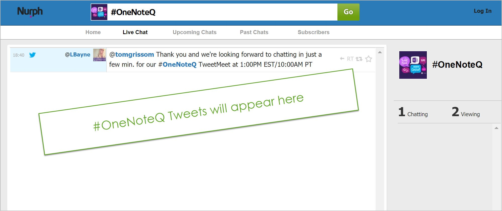
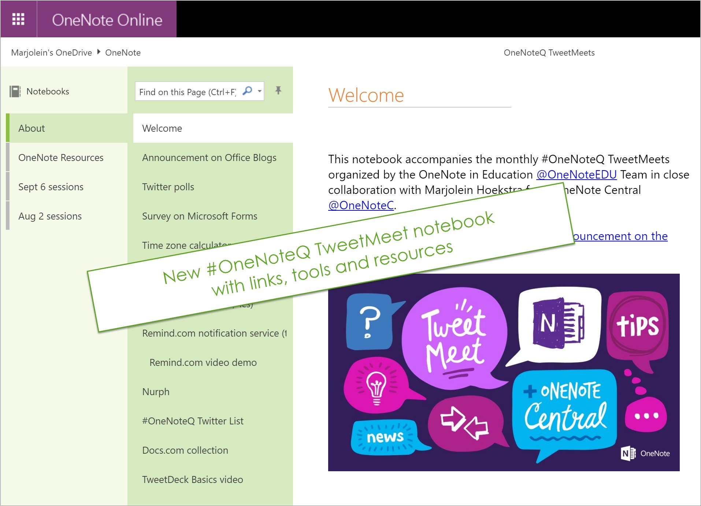
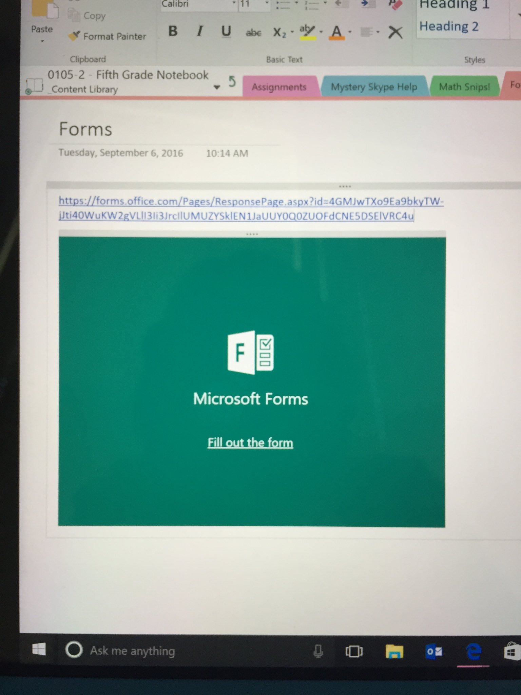

- Follow #OneNoteQ and join the OneNote experts right NOW for an on-boarding TweetMeet. #MIEexpert #edchatie pic.twitter.com/6R1rPyxBOQ
- Hello! Halo! Cjao! Woot! Our #OneNoteQ TweetMeet has begun! Welcome all. Glad you are here! pic.twitter.com/QVnwXd66bo
- @OneNoteEDU I wouldn't dream of missing this #OneNoteQ #MIEE M https://twitter.com/OneNoteEDU/status/773204641643425792 …
- @apsitnatasha Welcome to the #OneNoteQ TweetMeet, Natasha!
- @APSITMELISSA So glad you could attend the #OneNoteQ TweetMeet! 😊
- @OneNoteEDU can't a section in a class onenote be setup to give notifications when new content is added #OneNoteQ
- @lmlougheed @HSpringsSTEM Welcome and thanks for joining the #OneNoteQ TweetMeet! Be sure to add our hashtag: #OneNoteQ!
- @PeterHTodd @OneNoteEDU Currently, new content is bold and highlighted in light green when added in a class notebook #OneNoteQ
- Hello everyone! Excited to be here for the second #OneNoteQ TweetMeet with all the #MIEExpert & friends. I'm your @Office365 education guy!
- At every new #OneNoteQ TweetMeet we try something new. This time, we check out @Nurph http://onen.link/nurph-onenoteq pic.twitter.com/Hrm5HYZg24
- @mtholfsen @OneNoteEDU yeah but it doesn't alert students to go and look. An app notification to their device would be fantastic #OneNoteQ
- @OneNoteEDU can we get a Staff Notebook add-in just like the Class Notebook add-in for the functionality? Please and Thank you #OneNoteQ
- @eilymurphy What's your location, Eily? #OneNoteQ
- @PeterHTodd @OneNoteEDU We hope to bring the same notifications feature we have for MS Account to Office 365 in the future #OneNoteQ
- @APSITFelisa @OneNoteEDU What functionaility are you wanting? You can use the Add-in on Staff Notebooks today #OneNoteQ
- Goede avond vanuit Belgium #OneNoteQ #MIEExpert
- @margaretsimkin Greetings from the east from Waterford! #OneNoteQ
- @margaretsimkin Thanks for joining us! We look forward to answering any questions you may have. #OneNoteQ
- @vangampelaere Welcome! Thanks for joining. Glad you are here for our #OneNoteQ Tweetmeet!
- A1 #OneNoteQ many people on Twitter, here are a few but many more @OneNoteC @sig225 @DarrellCWebster @samuelmcneill ...
- @APSITFelisa You can do all of that by using the Class Noteobok Add-in with a Staff Notebook #OneNoteQ
- Ask me about ink in OneNote! Learn more @ http://www.onenote.com/ink #OneNoteQ #ThinkWithInk pic.twitter.com/HePXwQ3srs
- @vangampelaere yes, fixed templates sound great for coordinating across school #OneNoteQ
- @xSamMarjolein Welcome to the #OneNoteQ TweetMeet, Samantha. 😊
- New: all #OneNoteQ TweetMeet links, tools and resources as a #OneNote notebook http://onen.link/onenoteq-tweetmeets-onenote-notebook … by @OneNoteC pic.twitter.com/lLxnM6DbEa
- @TammyDunbar Good news! It's there today :) Check out @kurtsoeser on his blog: http://mspoweruser.com/microsoft-announces-availability-microsoft-forms-office-365-education/ … #OneNoteQ
- @somethingwithin Renita, thank you so much for joining the #OneNoteQ TweetMeet! We look forward to hearing what you have to say.
- @SavvidouHelen Why do you want to have it structured this way? #OneNoteQ
- .@vangampelaere we are looking into this. Have you tried sharing templates by publishing them to https://docs.com/en-us ? #OneNoteQ
- Join the #OneNoteQ TweetMeet... Happening right NOW!!! @APSInstructTech https://twitter.com/OneNoteC/status/773208445524799490 …
- @sandiadams AMEN to the organize #OneNoteQ bookshelf!!! Great suggestion!
- @TammyDunbar @kurtsoeser Just copy the "Send Form" link that a user would click to open it and then put it right into #OneNote #OneNoteQ
- @SavvidouHelen You can use the "Distribute Content Library" to copy across. Also, the Teacher-Only" section can be used to store #OneNoteQ
- Q2 Who has earned the #OneNote Teacher Academy Badge & what did you learn? http://onen.link/2bQFhIU #OneNoteQ pic.twitter.com/ZnrTzGAqPg
- Thanks @OneNoteEDU #OneNoteQ for the constant updates and changes - thanks for listening and supporting
- Trying to insert @OfficeMixTeam but it only displays hyperlink not live mix. What causes this? #OneNoteQ
- @arbar13 @TammyDunbar @kurtsoeser yes, has been there for a while though doesn't embed properly on online version #OneNoteQ
- #OneNoteQ This is what I get: linked but not embedded. Help? :-) pic.twitter.com/OOUVYBRthI
- @SavvidouHelen You could do that as well #OneNoteQ
- @APSITFelisa The thanks belong to you and the growing number of users! It's your GREAT feedback that allows us to grow. #OneNoteQ
- Definitely going to check this out later! @APSITMELISSA @APSITFelisa #OneNoteQ https://twitter.com/KamatMahesh/status/773211133071101952 …
- Agreed with @APSITMELISSA, I feel using a mac doesn't allow me to profit from OneNote's full potential. #OneNoteQ
- I TOTALLY agree with needing some MAC love! Our coworker @APSITFelisa can do cool things that we can't! LOL @APSITMELISSA #OneNoteQ
- A2 fabulous resource to point colleagues to. Seen some great work after they complete course #OneNoteQ #MIEExpert https://twitter.com/OneNoteC/status/773209909806657536 …
- @tomgrissom Are you on the GA build (1.09) that came out last month? What OS/machine are you on? #OneNoteQ
- @mtholfsen Able to change the color of the notebook would be a nice start. #OneNoteQ
- Completely agree with you! #MIEExpert #OneNoteQ https://twitter.com/Lanny_Watkins/status/773212495297277954 …
- Fantastic to hear! Anything more you think would be helpful to add in the training? #onenoteQ https://twitter.com/Lanny_Watkins/status/773212495297277954 …
- @mtholfsen would love to be able to "send to onenote" from my outlook email! #OneNoteQ
- .@mtholfsen using Enterprise Desktop 2016 MSO 16.0.4405.1000 on Windows 10 #OneNoteQ
- @mtholfsen If you want a very specific answer, I would like Epocrates+ Calculators implemented, very basic but extremely useful. #OneNoteQ
- @tomgrissom What version of the Add-in - can you check Help and Feedback --> About and tell m the version? #OneNoteQ
- @apsitnatasha Great suggestion, vote here: https://onenote.uservoice.com/forums/327165-onenote-for-mac … #OneNoteQ
- Can't wait to hear all your #oneNoteQ Tips & Tricks!!! I know @sandiadams & @TammyDunbar have fantastic tips?! https://twitter.com/OneNoteC/status/773212166686113792 …
- @apsitnatasha Just PRINT TO ONENOTE from your Outlook email. Easy! #onenoteq
- @OneNoteEDU I like glitter - can we get the updated Ink features without windows 10 download? #OneNoteQ
- I would like to have OneNote assessment to help us when we are training a group to anticipate their needs #OneNoteQ https://twitter.com/tammydunbar/status/773213182089388033 …
- FF to 12 minutes of TT4T, using OneNote Class Notebook for feedback for students http://techtalk4teachers.blogspot.com/2016/08/episode-192-back-to-school-with_87.html … #OneNoteQ https://twitter.com/EasiPC_Paul/status/773212604793749504 …
- @RheaFlohr @EasiPC_Paul @OneNoteC Also try Learning Tools https://www.onenote.com/learningtools Watch the video for more info! #OneNoteQ
- @RheaFlohr @OneNoteC I highly recommend opening the Class Notebook with the desktop version of @OneNoteEDU and using the tools #OneNoteQ
- @MikeMunski yep, getting a little muddled w desktop/browser/app features, students too :( #OneNoteQ
- @lmlougheed @HSpringsSTEM We're happy you are here too! What is your best #OneNoteQ Tip & Trick at @HSpringsSTEM
- Would love examples of how educators are using @OneNoteEDU in their subject areas...for inspiration #OneNoteQ https://twitter.com/LBayne/status/773212836109496320 …
- @apsitnatasha We figured that you might enjoy it, since you're looking to add more glitter to your OneNote. 😊 #OneNoteQ
- @tomgrissom Do you an "Update" button on the toolbar? #OneNoteQ Best is to uninstall current addin, download from http://onenote.com/learningtools
- I absolutely love the send to OneNote from outlook feature and print to OneNote @OneNoteEDU #OneNoteQ teachers love this feature!
- @APSITMELISSA @skemnitz #OfficeLens is now available on all your devices in app stores! It even sends notes to your Class Notebook #OneNoteQ
- @APSITFelisa @OneNoteEDU.... Ummmmm can a Mac user get that functionality?!?!? #justsaying lol #OneNoteQ @apsitnatasha
- @tomgrissom We made some improvements in the final version of Learning Tools so that is probably part of it #OneNoteQ
- Popular with our staff who are developing there notebooks using their Word worksheets as Ss use inking #OneNoteQ https://twitter.com/APSITFelisa/status/773216799236169728 …
- .@Lanny_Watkins @OneNoteEDU I am a huge fan of #digital_ink, many subject examples from @sig225 here https://onedrive.live.com/view.aspx?resid=4AC891949A1871F1!8461&cid=4ac891949a1871f1&app=OneNote … #OneNoteQ
- All links, tools and resources about #OneNoteQ TweetMeets are in this #OneNote notebook: http://onen.link/onenoteq-tweetmeets-onenote-notebook … pic.twitter.com/ZfK46fCj4F
- WOW! Thanks @KamatMahesh !! That is THE ABSOLUTE hot-ness!!!!! WOW!!!!!! #OneNoteQ https://twitter.com/KamatMahesh/status/773218043686027264 …
- @SavvidouHelen That autocorrect feature just blew me off of my feet!!!! #OneNoteQ
- @OneNoteEDU has changed how schools do their planning and work collaboratively #OneNoteQ
- I am in overload mode - thanks for ALL the great info @OneNoteEDU #OneNoteQ
- Just finished my first #OneNoteQ TweetMeet! Exhausted but ready to go play with #OneNote!!! #MIEExpert @Microsoft_EDU
- Learning Flows 3 #OneNote - Technology Enhanced Classrooms and the Cloud: https://www.youtube.com/watch?v=qS0BTJCi6to … #OneNoteQ #MIEExpert #OneNoteQ
- .@KamatMahesh @Lanny_Watkins thank you, here is a #Sway we put together for #back2school with #OneNote https://sway.com/oAmoCDe2tlTGUMwj … #OneNoteQ
- Ahhh to my Class Notebook too?! That is awesome. Time for more training on #officelens #OneNoteQ https://twitter.com/arbar13/status/773217213566242816 …
- @SavvidouHelen Thank you for joining us at the #OneNoteQ Tweet Meet!
- Nice video of the goodness of #officelens and @msonenote #OneNoteQ https://twitter.com/kamatmahesh/status/773218043686027264 …
- @tomgrissom We learned a lot from everyone who joined us. Thank you! #OneNoteQ
- @RheaFlohr See you next month, Rhea! Thanks for taking part in today's #OneNoteQ TweetMeet. 😊
- @eilymurphy Thanks for joining us, Eily! Are you planning to attend next month's #OneNoteQ TweetMeet? http://off365.ms/AqtAwf
- @TammyDunbar And now you can Print to OneNote Online! #OneNoteQ
- Q3 #OneNoteQ @LBayne I love @surface + @OneNoteEDU to asses practical activities in #PhysicalEducation #MIEExpert pic.twitter.com/Ym386uswbC
- @OneNoteEDU will have to get Teacher Academy badge and take it from there, I think #OneNoteQ
- The latest CLMS CTE Daily! http://ln.is/paper.li/CLMS_CTE/gSHXn … Thanks to @ncceeoutreach #onenote #onenoteq
- Hi-speed replay for #OneNoteQ TweetMeet sessions 1 http://onen.link/nurph-replay-sept6-s1 … 2 http://onen.link/nurph-replay-sept6-s2 … #OneNote @Nurph pic.twitter.com/Dw5eZRsFv4
- We're having so much fun with these #OneNoteQ TweetMeets, we've marked our calendars already. Will we see you then? pic.twitter.com/jeA6xj3I2I
- Join the experts w/ the hashtag #OneNoteQ for a #OneNote onboarding TweetMeet! http://soc.fm/5Af5gG1r https://twitter.com/onenoteedu/status/772822855180492804 … #edtech
- @dmanakhov @TheIdeaPump #OneNoteQ Problem is Mac OneNote is gimped (by design?) and may always be, given Microsoft's history with Mac stuff.
- @SummerWinrotte I will reach out and let you know! I will be in Indiana all this week and next - would love to come by and visit #OneNoteQ
- @sig225 @SummerWinrotte thanks for sharing your wisdom and expertise today in our #OneNoteQ TweetMeet! Proud to have such great #MIEExperts
- true, again platforms shoudnt matter. we teach students to be platform independent, and thats where #onenoteq shines https://twitter.com/TheIdeaPump/status/773312158302101504 …
- Thanks, everyone, exciting to see and hear what everyone is doing #OneNoteQ #MIEExpert
- @TheIdeaPump exactly... that's why #onenoteq is hardware independent. you can run it on any platform
- @MikeMunski #OneNoteQ email page(s) to missing students (attachments auto), links docs +other notebooks, add-ins for distribute + lrng tools
- thanks everyone & the #OneNoteQ moderators for another great TweetMeet, #OneNoteRocks
- @MikeMunski I have a class going now. I would be interested also the suggestions #OneNoteQ
- @MikeMunski Class Notebook add-in is a MUST for the classroom T & 'Send to OneNote' print function, shows efficiency capabilities. #OneNoteQ
- @townesy77 It'll be interesting to see what they do from an improvement standpoint. #onenoteq
- @TheIdeaPump makes sense on mobile but wastes space on browser IMO #OneNoteQ
- @MDSAJohnson Nice. Thanks! #onenoteq
- @townesy77 They might move it but from a browser perspective I'd be surprised if they did. It matches the mobile interface. #onenoteq
- had a discussion on TechTalk4Teachers with 1st time OneNote Class Notebook user http://techtalk4teachers.blogspot.com/2016/08/episode-192-back-to-school-with_87.html … FF to 12 minutes #OneNoteQ
- Our @CherokeeSchools Superintendent @drbvh24 is a @OneNoteEDU ninja. Helps to have support from the top! #OneNoteQ
- @TheIdeaPump this is another great descriptor of OneNote #OnenoteQ https://twitter.com/sig225/status/773306328638980096 …
- @dmanakhov Thanks for the clarification. #onenoteq
- #OneNoteQ for you: I am looking forward to seeing how Delve Analytics interacts with #OneNoteClass -what will surface from use/interactions?
- @TheIdeaPump Google Classroom is more like a facebook for class. Scroll to find things. OneNote is whole Notebook/easier format #OneNoteQ
- @mtholfsen @dmanakhov @MgHelio #OneNoteQ That's what we do, too; same sign-in as for the LMS we use; high school
- @MikeMunski It is pretty easy to use - I love being able to ink or record right on to the snip & then save it as is. #onenoteQ #surfaceedu
- Awesome PD & Staff Notebook Tip! #OneNoteQ https://twitter.com/Jasonthegodman/status/773306845494587392 …
- Links, tools and resources related to #OneNoteQ TweetMeets as a handy #OneNote notebook: http://onen.link/onenoteq-tweetmeets-onenote-notebook … pic.twitter.com/Pet9kkzwNt
- @dmanakhov so you grab a view link and they are able to see the content lib and collaboration space? #OneNoteQ
- Q3: Exporting last year's #OneNoteClass & handing to new teacher to use next year - sees all Ts & Ss work in context #OneNoteQ
- @townesy77 Also choose new window from View menu. #OneNoteQ
- @TheIdeaPump @tomgrissom @OneNoteC pen-based #OneNote not limited to Surfaces; I use on a cheap HP tablet. Not as elegant, tho. #OneNoteQ
- +1. Many parents asking for ability to see what's going on in ClassNotebooks. #OneNoteQ https://twitter.com/MgHelio/status/773305048222826502 …
- @SummerWinrotte #OneNoteQ Since you're relatively new, is this tip THE tip you'd give someone using OneNote for the first week? Or other?
- @dmanakhov That's admirable, but your student are coming to join me in the workplace, hence my concern. :) #onenoteq
- @TheIdeaPump i'm not worried about workplace. i'm an educator. #onenoteq changes classroom for better and that's what's most important to me
- @MikeMunski I use OfficeLens from my cell phone. Works like a charm. #OneNoteQ
- Excited to be here with our amazing #OneNoteQ family and community of educators & leaders! #MSFTEdu #MIEExpert https://twitter.com/OneNoteC/status/773304274004631552 …
- @dmanakhov @CaryAcademy But are they advocates strong enough to compel it's use in the workplace? #onenoteq
- A3: Abs Fav-When lesson planning print to OneNote. No reopening or inserting via menu necessary! TA DA! 💜 #OneNoteQ https://twitter.com/onenotec/status/773302771177164800 …
- @mtholfsen 16.0.7167.2040 I assume you asked as it's a possibility with a newer version. Finally upgraded to current channel! #OneNoteQ
- .@TheIdeaPump they will.. @CaryAcademy students take #Onenoteq skills beyond high school and into college. it's been proven
- BOOM! Why Insert Space?--I'm curious about the scenario #OneNoteQ https://twitter.com/sig225/status/773303172479717376 …
- A) Embedding forms and youtube videos directly into @msonenote pages. Ss don't have to leave their page! #onenoteq https://twitter.com/OneNoteC/status/773302771177164800 …
- @MikeMunski #OneNoteQ Use the "Insert Pictures" and "Insert Online Pictures" files overlay page, click to select and insert; tie to Flickr
- I will mention once again the need to organize my many notebooks on the bookshelf. Collapsing like pages? #OneNoteQ https://twitter.com/arbar13/status/773303444564086784 …
- @MDSAJohnson @TheIdeaPump NO comparison for many areas:science,art,math Digital ink of #Surface takes it 2 another level. #OneNoteQ #Surface
- @TheIdeaPump @tomgrissom @OneNoteC They're in the classroom to learn though ... and learning works best with a pen not a keyboard. #OneNoteQ
- @hpalmersheim Good point. The disconnects between the two cause lots of issues. #onenoteq
- @TheIdeaPump our issue is that 365 accounts don't work in the App Store so they have to use the full client #OneNoteQ
- @hpalmersheim Microsoft is talking about unification, but what specifically that entails is unknown. #onenoteq
- @TheIdeaPump #OneNoteQ I'm interested also Surface v. Chromebook?
- Did you all know that there's a #OneNote Learning Conference coming up? More info: http://www.learnonconference.com/ by @Jared_DeCamp #OneNoteQ
- @townesy77 @OneNoteEDU And I love to see that you also have given back by making incredible videos now! #OneNoteQ pic.twitter.com/7WYntnWrOu
- I like the different self paced classes, the badges are cool too! #OneNoteQ https://twitter.com/onenotec/status/773300258239635456 …
- @TheIdeaPump Let's ask @tomgrissom to weigh in on this question about Surface vs ChromeBooks #OneNote #OneNoteQ
- @SummerWinrotte Have you used the ink math assist feature yet, Summer? http://off365.ms/ZxI7SK #OneNoteQ
- another #OneNoteQ resource: Magic View-Only OneNote Notebook https://docs.com/dr-grissom/5556/pedagogy365-magic-view-only-onenote-notebook … purely pushing T content out to Ss but easy to update
- .@SummerWinrotte obvious for me as a math teacher - but Eng & Language teachers forget how easy it is to use a pen over a keyboard #OneNoteQ
- Here are my training resources for #Office365 #OneNoteQ
- @SummerWinrotte no way!!! And already made a music video? IMPRESSIVE! #OneNoteQ
- Q2 Signed up for the #OneNote Teacher Academy yet? What do you like most about it? http://onen.link/2bQFhIU #OneNoteQ pic.twitter.com/dnZbDIcIfW
- Check it out @CantonSTEM @ClarkCreekSTEM @HSpringsSTEM @BGESTEM Microsoft STEM kits #OneNoteQ https://twitter.com/mtholfsen/status/773298798151905280 …
- Love to see these kinds of resources come up in our #OneNoteQ TweetMeets! https://twitter.com/TeacherCast/status/773298097636175872 …
- @DC_STEMTastic Released at ISTE in June, check it out, it's awesome! #OneNoteQ
- @sandiadams @msonenote @cmsaxon @arbar13 @mtholfsen @FredaWilliams And now we learn form you! #OneNoteQ
- @TheIdeaPump We would have to agree! Did you use any of training courses? http://off365.ms/Zv9Eu8 #OneNoteQ
- A1) I got trained via MIE trainer academy by the GOAT @sandiadams #OneNoteQ
- @DC_STEMTastic Have you checked out the new Microsoft STEM kits delivered in OneNote? https://docs.com/msft-us-edu/5354/microsoft-stem-maker-kit-lessons?c=CcX4F2 … #OneNoteQ #STEM
- Was introduced to @msonenote by @cmsaxon years ago and grew along with it. @arbar13 @mtholfsen total mentors & @FredaWilliams twin #OneNoteQ
- Here is my page of #OneNoteQ Resources http://www.teachercast.net/?s=onenote
- Feel free to follow #OneNoteQ TweetMeets on @Nurph. It's free, no need to sign in http://onen.link/nurph-onenoteq #OneNote pic.twitter.com/N6pY2WNtUg
- I learned my doing. No formal training. @mtholfsen was HUGE help! so tkful to have met him last year! #OneNoteQ https://twitter.com/onenotec/status/773296474465701888 …
- @TheCloudSherpa Glad you could make it! 😉 #OneNoteQ
- A powerful way to learn #OneNoteQ https://twitter.com/TeacherCast/status/773297083088564224 …
- @TheCloudSherpa Ah I see. Greetings from Roosendaal, the Netherlands! #OneNoteQ
- #OneNoteQ I was first introduced to @OneNoteEDU when the Digital Education Revolution rolled out 1:1 laptops in public schools in 2009
- #OneNoteQ what would you recommed? #officeGroups or #OneNote or #OneDrive or #SharePoint as file "repository"
- @DarrenClayEDU Thanks for joining us, Darren! We look forward to hearing what you have to say. #OneNoteQ
- A1) Now if I get stuck, I ask @rklhuang or @noisyteacher, or just the twitter sphere or #MIEExpert awesomeness :) #OneNoteQ
- @hpalmersheim We don't have the perfect page, but this is a great resource: https://education.microsoft.com/gettrained/onenoteone-stop … #OneNoteQ
- @xSamMarjolein Minneapolis, MN, USA. Sorry I should know better than to use abbreviations #OneNoteQ
- @OneNoteC I was trained in one note by the AMAZING @mtholfsen and @arbar13 It was a great podcast series on @OneNoteEDU #onenoteq
- @TheCloudSherpa MPLS? Now that's a country code I have never heard of! #OneNoteQ
- @townesy77 Hey, Megan! We're excited to have you here.😊 #OneNoteQ
- @townesy77 Good Morning as I approach a lovely fall evening here in the US! :) Love how global our #OneNoteQ TweetMeets have become!
- welcome & Hello, Halo, Hola, Ciao! :) Thanks for joining our #OneNoteQ TweetMeet all u OneNote Avengers! MIEExpert https://twitter.com/OneNoteC/status/773294715798192128 …
- @xSamMarjolein You are a OneNote trooper, Samantha! #OneNoteQ
- Come join our #education Tweet Meet right now! #OneNoteQ #edchat #elearning #edtechchat #K12 #mieexpert https://twitter.com/OneNoteC/status/773294715798192128 …
- @SummerWinrotte Will you be joining us for the second #OneNoteQ TweetMeet today at 7:00PM EST? I would love to come and visit while in IN!
- @OneNoteC thanks, so I can rewatch todays #OneNoteQ . I was on my way to an #Office365 workshop which I am holding tomorrow @Innsbruck
- Join our #OneNoteQ TweetMeet today! 4PM PST pic.twitter.com/CqrWk7RTpi
- @OneNoteEDU What enhancements have been made to OneNote Classroom since the last school year? #OneNoteQ
- Chat w/ @OneNoteEDU + @OneNoteC --#OneNoteQ TweetMeet at 4PM PT & share your best #FirstdayofSchool Tips&Tricks! pic.twitter.com/sKXY4AlhaB
- Got your Twitter dashboard set up yet? Here's a quick @TweetDeck tutorial http://onen.link/tweetdeck-basics-onenotec … by @OneNoteC #OneNoteQ #OneNote
- Will you join @OneNoteEDU and #OneNote experts in the second #OneNoteQ TweetMeet? Count down with us: http://onen.link/sept6-4pm-countdown-onenoteq-tweetmeet …
- Want a time-lapse replay of #OneNoteQ TweetMeet session 1? How about 32X speed? http://onen.link/2cEiZ32 #OneNote pic.twitter.com/8WKkB1pC5z
- Announcing monthly educator “#OneNoteQ TweetMeets” in partnership with OneNote Central - http://bit.ly/2au1Sgu via @Microsoft
- TweetMeet!Starting at 4:00 PM PDT,OneNote Experts will be answering your questions live #OneNoteQ #MIEExpert http://soc.fm/GLcRkB8k #edtech
- @sandiadams @HastyEdTech @OneNoteEDU Would love to hear OneNote gamifying Tips & Tricks in our second #OneNoteQ TweetMeet today at 4PM PT!
- @OneNoteEDU will have to get Teacher Academy badge and take it from there, I think #OneNoteQ
- Q3 #OneNoteQ @LBayne I love @surface + @OneNoteEDU to asses practical activities in #PhysicalEducation #MIEExpert pic.twitter.com/Ym386uswbC
- @TammyDunbar And now you can Print to OneNote Online! #OneNoteQ
- @eilymurphy Thanks for joining us, Eily! Are you planning to attend next month's #OneNoteQ TweetMeet? http://off365.ms/AqtAwf
- @RheaFlohr See you next month, Rhea! Thanks for taking part in today's #OneNoteQ TweetMeet. 😊
- @tomgrissom We learned a lot from everyone who joined us. Thank you! #OneNoteQ
- Nice video of the goodness of #officelens and @msonenote #OneNoteQ https://twitter.com/kamatmahesh/status/773218043686027264 …
- @SavvidouHelen Thank you for joining us at the #OneNoteQ Tweet Meet!
- Ahhh to my Class Notebook too?! That is awesome. Time for more training on #officelens #OneNoteQ https://twitter.com/arbar13/status/773217213566242816 …
- .@KamatMahesh @Lanny_Watkins thank you, here is a #Sway we put together for #back2school with #OneNote https://sway.com/oAmoCDe2tlTGUMwj … #OneNoteQ
- Learning Flows 3 #OneNote - Technology Enhanced Classrooms and the Cloud: https://www.youtube.com/watch?v=qS0BTJCi6to … #OneNoteQ #MIEExpert #OneNoteQ
- Just finished my first #OneNoteQ TweetMeet! Exhausted but ready to go play with #OneNote!!! #MIEExpert @Microsoft_EDU
- I am in overload mode - thanks for ALL the great info @OneNoteEDU #OneNoteQ
- @OneNoteEDU has changed how schools do their planning and work collaboratively #OneNoteQ
- @SavvidouHelen That autocorrect feature just blew me off of my feet!!!! #OneNoteQ
- WOW! Thanks @KamatMahesh !! That is THE ABSOLUTE hot-ness!!!!! WOW!!!!!! #OneNoteQ https://twitter.com/KamatMahesh/status/773218043686027264 …
- All links, tools and resources about #OneNoteQ TweetMeets are in this #OneNote notebook: http://onen.link/onenoteq-tweetmeets-onenote-notebook … pic.twitter.com/ZfK46fCj4F
- .@Lanny_Watkins @OneNoteEDU I am a huge fan of #digital_ink, many subject examples from @sig225 here https://onedrive.live.com/view.aspx?resid=4AC891949A1871F1!8461&cid=4ac891949a1871f1&app=OneNote … #OneNoteQ
- Popular with our staff who are developing there notebooks using their Word worksheets as Ss use inking #OneNoteQ https://twitter.com/APSITFelisa/status/773216799236169728 …